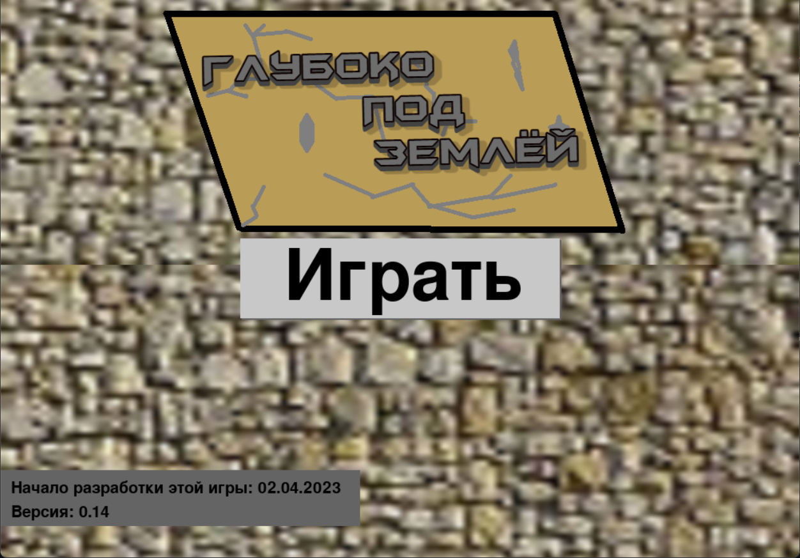

Добро пожаловать на официальный сайт разработчика MrSasha26!
Об игре "Глубоко под землёй..."
"Глубоко под землёй" (версия 0.14) - это в данном случае игра, в которой вы начинаете развиваться в подземелье, в земной коре. С помощью клавиши "ENTER" можно генерировать вокруг себя булыжник, пока-что из блоков есть только этот. С помощью клавиши "F1" можно сохранять карту.
В будущем в игру планируется добавить руды, данжи, инвентарь, сундуки и пр. Творите!


Ссылки на скачивание игры:
Для "windows":
"Глубоко под землёй..." (версия: 0.14).